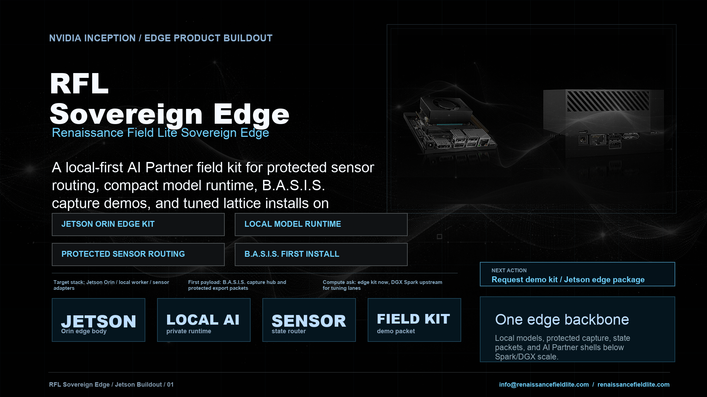

A local-first AI Partner field kit for protected sensor routing,
compact model runtime, B.A.S.I.S. capture demos, and tuned lattice
installs on Jetson-class hardware.
Jetson Orin edge kitlocal model runtimeprotected sensor routingB.A.S.I.S. first install

Product body
Edge hardware becomes the local shell for stateful AI Partners.
Local compute posture - runs compact partner shells without making sensitive sensor lanes cloud-only.
Protected capture path - hosts sensor adapters, state routing, packet building, local review surfaces, and export logic.
B.A.S.I.S. first install - uses biosignal capture as the first practical field payload before broader partner installs.
Upstream tuning bridge - larger Golden Field Lite AI and Mirror Architecture runs tune or validate models before compact builds install down to edge.
NVIDIA fit
Hardware ask with a real development reason.
Jetson
Edge AI Partner shell, local capture, sensor demos, and compact partner installation.
Holoscan
Future medical-device streaming bridge for B.A.S.I.S. when the capture graph hardens.
NIM / Riva
Packaged local service surfaces, voice layers, and clinical/session assistant routes.
DGX Spark
Upstream validation and tuning lane for local models before edge deployment.
Next gate
Build the first local edge package.
1. HardwareJetson Orin starter kit
Local model worker, capture router, and protected state-packet builder.
2. PayloadB.A.S.I.S. capture demo
Muse/MoFit state packet, dashboard surface, and review/export path.
3. ModelCompact local partner shell
Dedicated local runtime with no cloud-only dependency for sensitive lanes.
4. ReviewField demo packet
Public-safe outputs outside, raw probes and private mechanics under protected review.
{kind=link}